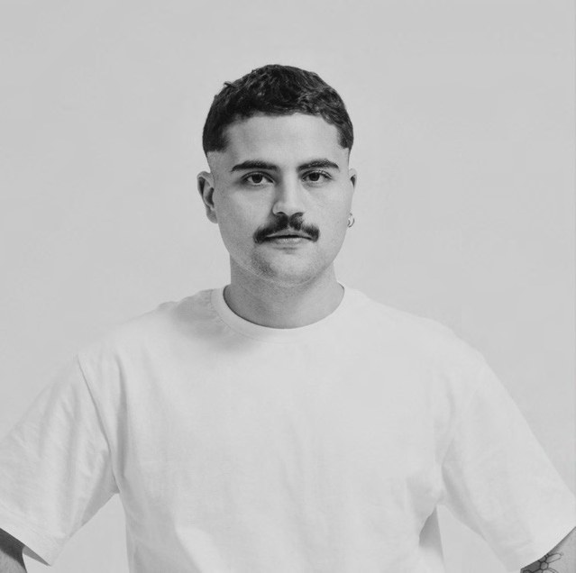

Atuo na interseção entre direção de arte, design e direção criativa, desenvolvendo projetos e campanhas a partir de narrativas visuais que conectam conceito, estética e comunicação.
Meu trabalho é atravessado por referências de moda, cultura pop, música e entretenimento, áreas que também fazem parte da minha pesquisa e repertório. Sou criador do Brazilian Camp (@acervocampbr), uma curadoria dedicada a investigar e reunir manifestações do camp no contexto brasileiro.
Gosto de trabalhar de forma próxima ao projeto, da construção do conceito aos seus desdobramentos visuais, buscando sempre encontrar uma linguagem que seja consistente, relevante e tenha personalidade.
Atualmente, estou aberto a novos projetos, colaborações e oportunidades.